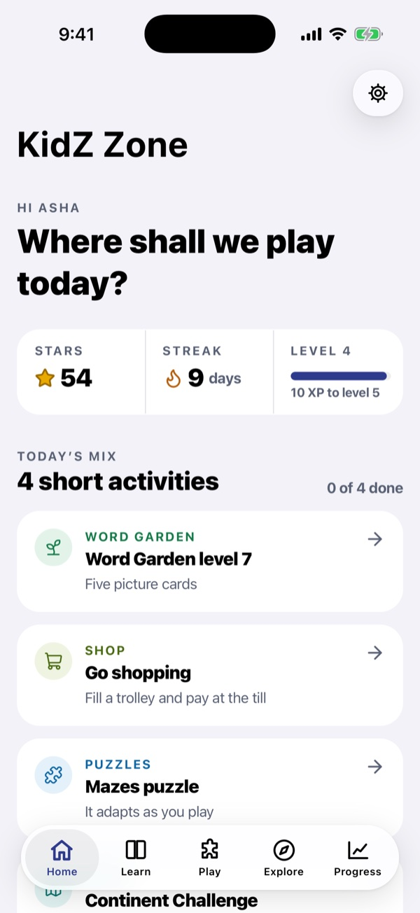
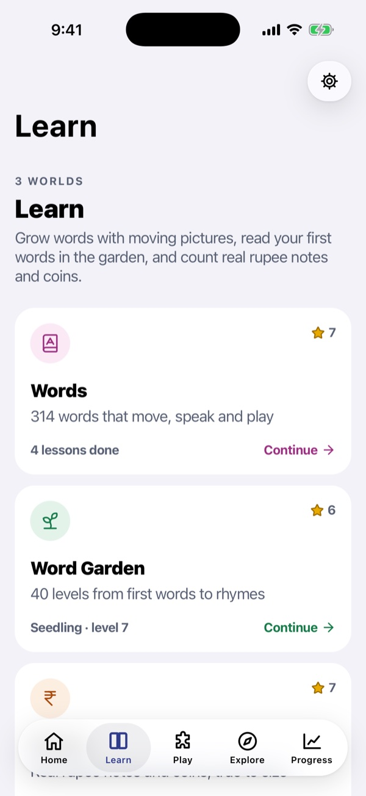
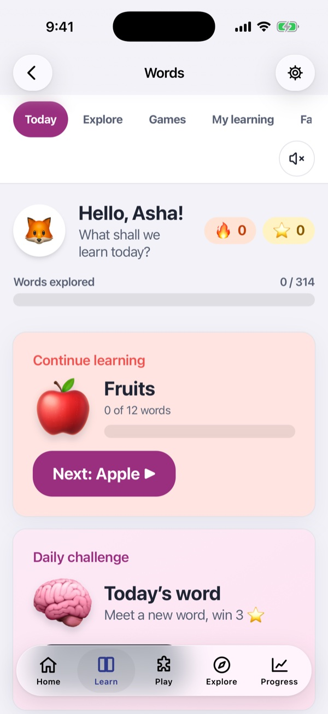
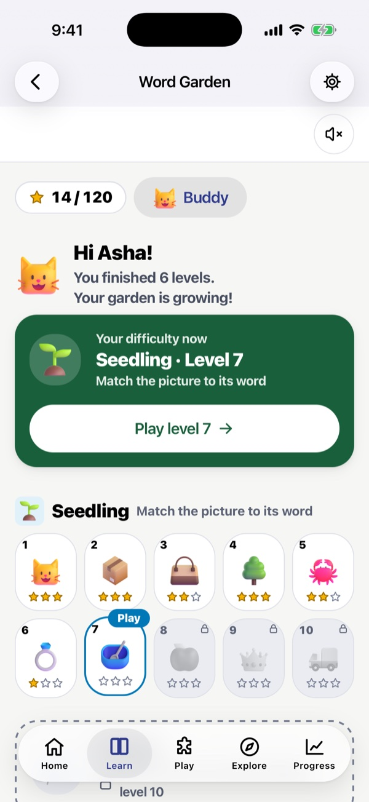
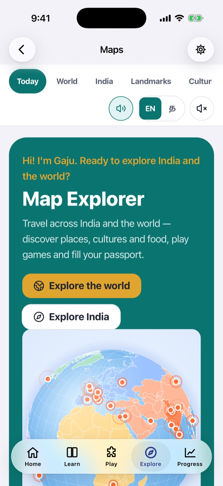
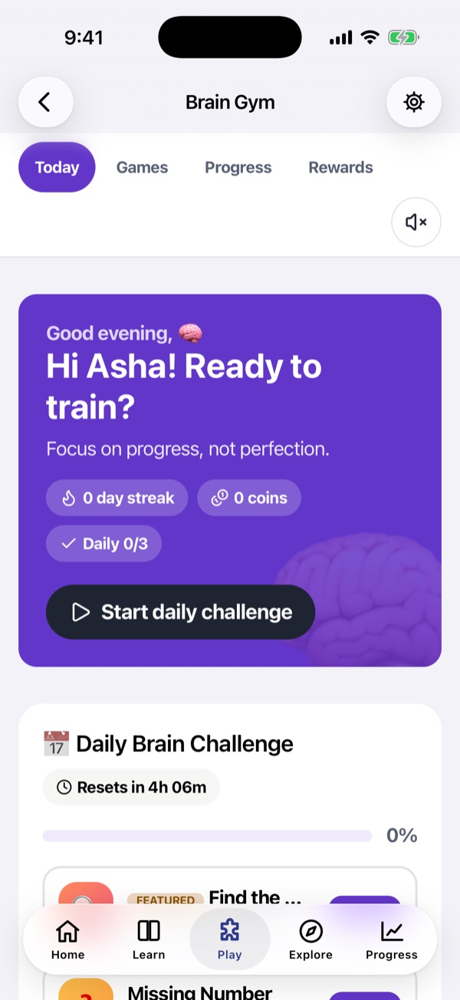
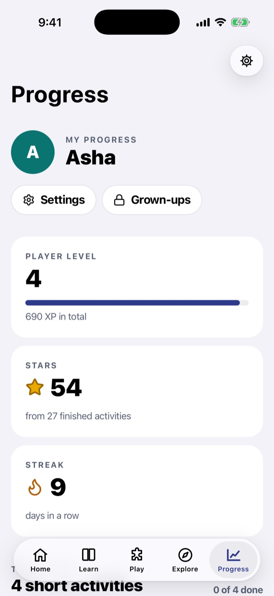

iPhone app
KidZ Zone for iPhone
A native SwiftUI app (iOS 17+) that wraps the KidZ Zone web app. Inside it the page switches to Apple’s Human Interface Guidelines look: large titles, a floating Liquid Glass tab bar with Home, Learn, Play, Explore and Progress, back buttons with inline titles inside each world, and haptics. The tab bar hides while a game runs. The Android app uses Material 3 instead, and the website keeps its Kolam look.
Installing an iPhone app on other people’s phones needs TestFlight or the App Store, so it is shown here as Simulator screenshots. Source: github.com/tgopinath/KidzZone-iOS ↗

Home 
Learn 
Words 
Word Garden 
Maps 
Brain Gym 
Progress